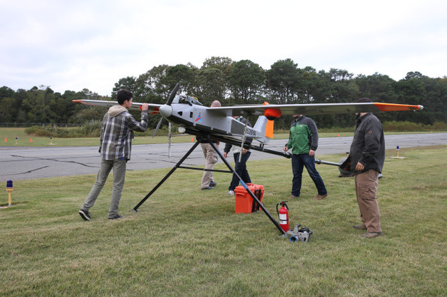

VERIZON WILL BEGIN USING DRONES TO BRING 4G CONNECTIVITY IN EMERGENCY AREAS
By Christian de Looper
October 6, 2016 4:50 PM
Forget more cell towers, Verizon is banking on airborne radios to offer extra 4G LTE coverage. Over the past two years, the company has been working on a new initiative called Airborne LTE Operations, or ALO, which basically means it will be outfitting drones with 4G radios so that they can beam connectivity to those below.
This might sound familiar — Facebook announced a similar initiative for providing internet connectivity to people who would not otherwise have it. Verizon’s plans, however, are a little more focused — the company will be using its drones to provide emergency LTE connectivity when cell towers are not an option.
So when could this be useful? There are actually plenty of cases in which LTE connectivity could be very useful. As TechSpot notes, for example, in 2012 Hurricane Sandy had a huge impact on the communication towers on the East Coast. At the time, it was said the storm wiped out a hefty 25 percent of cell towers in as many as 10 states.
Initially, Verizon will work with American Aerospace Technologies and will test connectivity using an unmanned aerial vehicle with a wingspan of 17 feet.
Of course, Verizon’s 4G drone could be used in more than just emergencies. At some point next year, the company hopes to implement the technology for a range of different purposes — including inspecting pipes and powerlines, as well as gathering data on farms and farmland.
Coincidentally, AT&T is working on almost the exact same project. The company announced last month it was working with Qualcomm to analyze how drones could be used safely with its 4G network. Trials started in September and included testing things like coverage, signal strength, and more. The partnership also used Qualcomm’s new Snapdragon Flight platform, which was built specifically for drones.